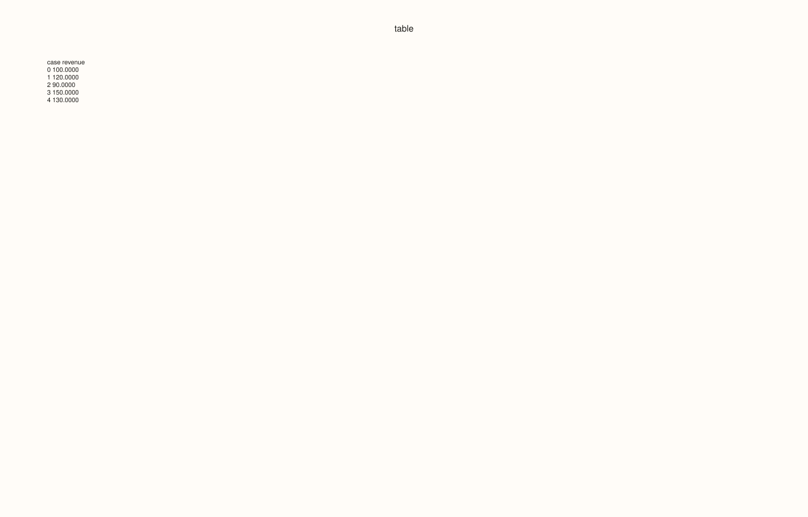
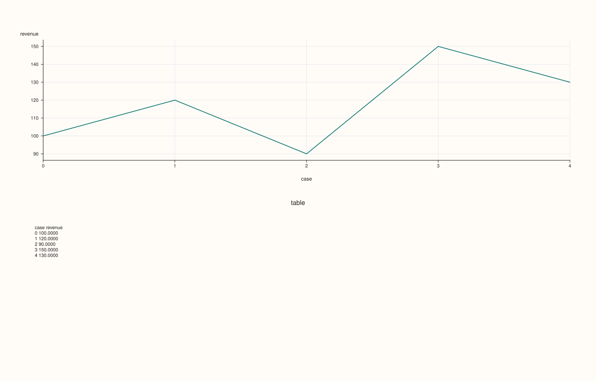
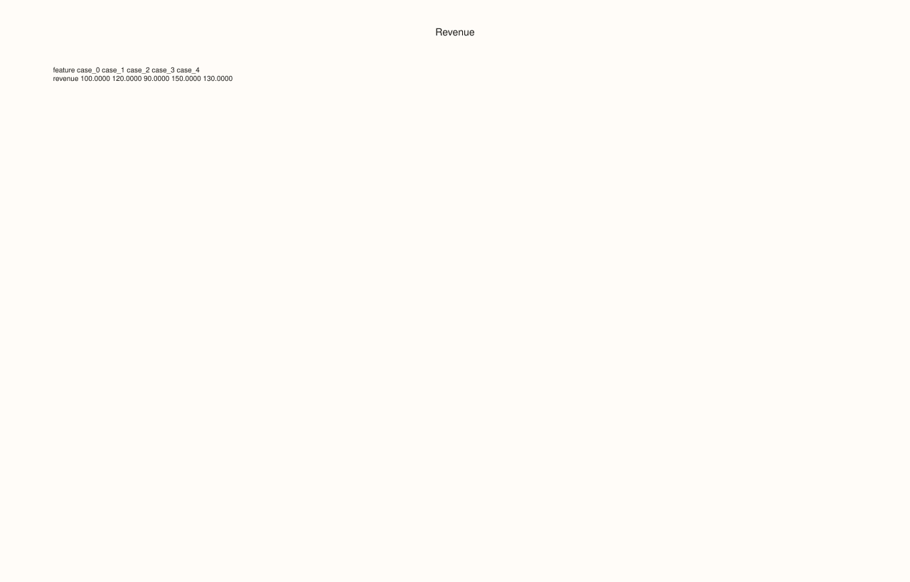

ThreadPlotAccessor::brief¶
Back to ThreadPlotAccessor API Reference
Signatures¶
ThreadPlotAccessor::brief(const BriefPlotOptions& options = {}) const -> pluss::pl::Studio
pluss::pl::Studio& ThreadPlotAccessor::brief(
pluss::pl::Studio& figure,
const BriefPlotOptions& options = {}) const
What It Does¶
Renders a fixed-width, monospace-formatted text table of the bound thread’s raw values as
a pane in a Studio — the single-series specialization of
DataFramePlotAccessor::brief. Like the 2D accessor’s
brief(), this has two distinct overloads: the first creates a brand-new Studio and
returns it; the second takes an existing Studio& by reference, appends the table pane
into it in place, and returns that same reference — see the 2D accessor’s important callout
for the full explanation of this in-place composition pattern.
Parameters¶
figure (pluss::pl::Studio&, in-place overload only)
An existing figure to append the table pane into.
options (BriefPlotOptions)
The identical struct documented on
DataFramePlotAccessor::brief
(title, precision, include_header, max_cases, transpose,
include_case_index, features_per_table, tables_per_row, table_gap_spaces).
features_per_table/tables_per_row have no visible effect here since there is always
exactly one feature (the bound thread) to lay out.
Returns¶
For the first overload: pluss::pl::Studio, a fresh figure with one pane containing the
formatted table.
For the second overload: pluss::pl::Studio&, the same reference passed in, with the table
pane appended.
Examples¶
Example 1. Default options: a fresh Studio with the bound thread’s values as a table.
using namespace pluss::table;
auto revenue = Thread(pluss::make_series({100.0, 120.0, 90.0, 150.0, 130.0}));
revenue = revenue.name("revenue");
auto chart = revenue.plot().brief();
chart.show();

Example 2. The in-place overload: appending a brief() table into a Studio that already
has a real chart.
auto chart = revenue.plot().line();
revenue.plot().brief(chart);
chart.show();
chart starts as the line plot’s figure (one pane); the second call appends a second pane
containing the brief() table directly into the same Studio.

Example 3. An explicit BriefPlotOptions, transposing the layout.
BriefPlotOptions options;
options.title = "Revenue";
options.transpose = true;
auto chart = revenue.plot().brief(options);
chart.show();

Notes¶
The two-argument-figure overload composes in place into an existing
Studio&; the other overload always creates a fresh one — seeDataFramePlotAccessor::brief’s important callout.features_per_table/tables_per_rowhave no visible effect, since there is always exactly one feature to lay out.Returns a
pluss::pl::Studio(orStudio&for the in-place overload) — seeline()for how to view or save the result.
See Also¶
DataFramePlotAccessor::brief: the method both overloads delegate to.ThreadPlotAccessor::auto_plot: picks a real chart type automatically, in contrast tobrief()’s fixed textual summary.